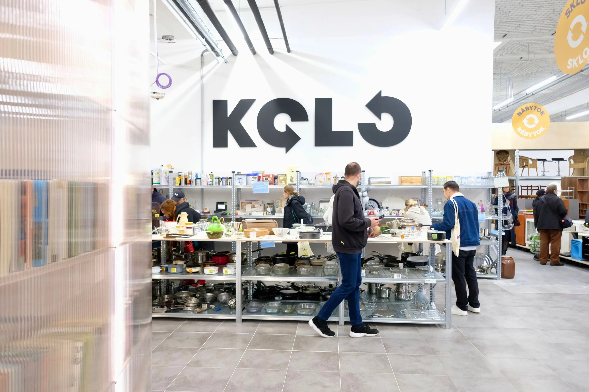
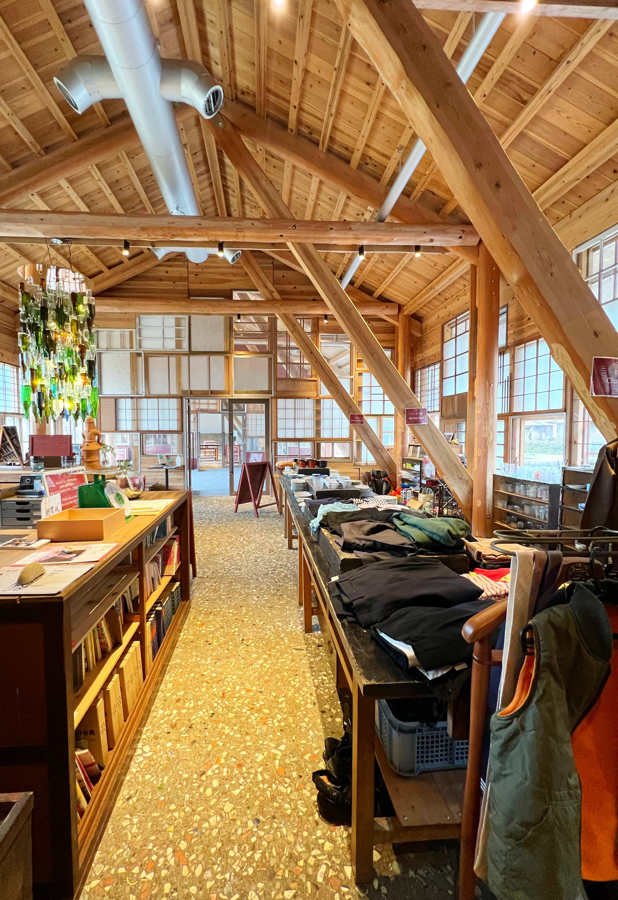

Discover the meaning behind zero waste
Core principles to guide your journey toward a waste-free lifestyle
Say no to what you don't need - from single-use plastics to buying extra food products for the sake of discounts. The first step to zero waste is preventing waste from entering your life.
Minimise the use of single use products such as plastic bags. This would reduce the amount of waste we produce in the first place, hence, reducing the need for recycling and disposal.
Extend the life of items by repurposing them. Embrace reusable alternatives such as plastic bags from grocery shopping as rubbish bags.
When you can't refuse, reduce, or reuse, recycle properly. Remember to put categorise the correct waste to the correct recycling bin.
Return organic matter to the earth through composting. Food scraps and yard waste can become valuable nutrients instead of methane-producing landfill trash.
Of waste and is projected to hit 3.40 billion in about 30 years
Of waste yearly
Sources: Waste Removal USA, EPA Waste StatisticsReal-world examples of zero waste store

Opened in 2022 this shop is a "Reuse Centre". This shop functions through selling second hand items. Besides that, people can bring in their second hand items to sell too. It also organises repair workshops for up-cycling and educational projects.

This town has committed to becoming completely waste-free by 2030. Residents separate their trash into 45 different categories, and the town has achieved an 80% recycling rate.